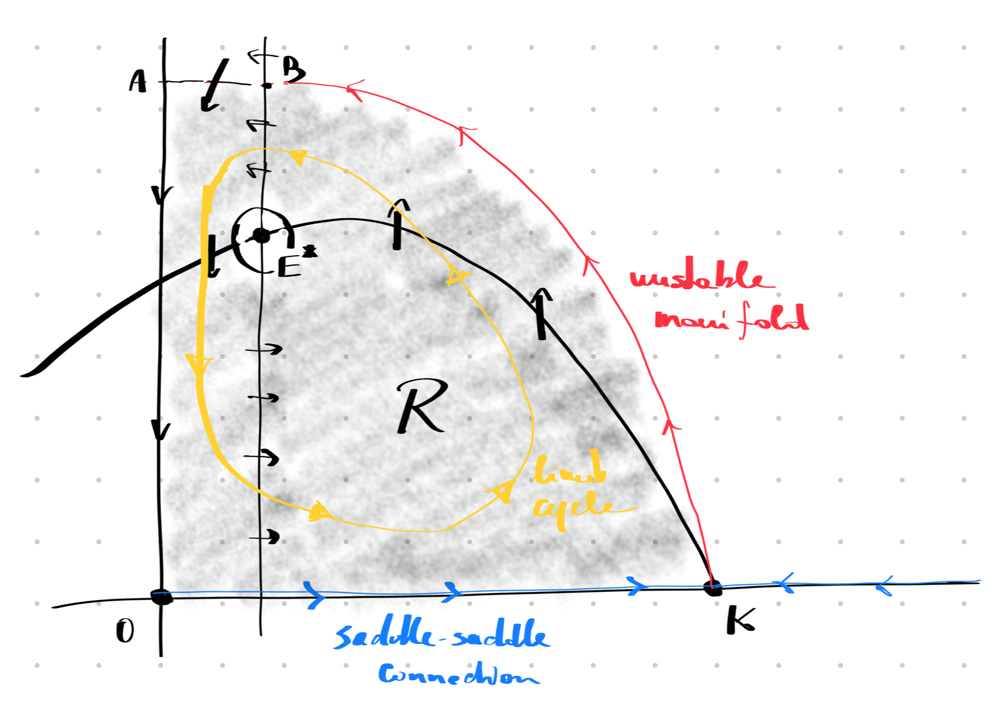

7 Rosenzweig-MacArthur model
This lecture is based on (Iannelli and Pugliese 2014, vol. 79, sec. 6.4)
7.1 Rosenzweig-MacArthur model
We see that a perturbation of the Lotka-Volterra model, obtained by adding the logistic term, destroys the structural stability of the original model: no limit cycles are present.
In 1963, Rosenzweig and MacArthur proposed a new model, of Gause-type, with a Holling type II predation. Again, this can bee seen as a small modification of the original system, thus we shall expect a similar dynamic for a wide range of parameters. The model reads as follows: \[ \left\{\begin{aligned} H' &= r H (1-H/K) - a \frac{H P}{1 + a T H}, \\ P' &= -\mu P + \gamma a \frac{H P}{1 + a T H}. \end{aligned}\right. \]
All parameters are positive. The new parameter \(T>0\) is the handling time, and the maximum killing rate is \(1/T\).
7.1.1 Non-dimensionalization
We have 6 parameters in total, but we can reduce them by rescaling the quantities: \[ u = \frac{H}{K}, \quad v = \frac{P}{\gamma K}, \quad \tau = \mu t. \]
The rescaled equations are: \[ \left\{\begin{aligned} \dot{u} &= \rho u(1-u) - \alpha \frac{\delta uv}{1+\delta u}, \\ \dot{v} &= -v + \alpha \frac{\delta uv}{1+\delta u}, \end{aligned}\right. \]
where we defined the following quantities: \[ \rho = \frac{r}{\mu}, \quad \alpha = \frac{\gamma}{T\mu}, \quad \delta = a T K. \]
The total number of parameters is now only 3.
7.1.2 Equilibria
The nullclines are as follows: \[ \left\{\begin{aligned} 0 &= \rho u(1-u) - \alpha \frac{\delta uv}{1+\delta u}, \\ 0 &= -v + \alpha \frac{\delta uv}{1+\delta u}, \end{aligned}\right. \]
Let us rewrite the system as follows: \[ \left\{\begin{aligned} 0 &= f(u)\bigl( \Phi(u) - v \bigr), \\ 0 &= v\bigl(f(u)-1\bigr), \end{aligned}\right. \]
where we defined: \[ f(u) = \frac{\alpha \delta u}{1+\delta u}, \quad \Phi(u) = \frac{\rho}{\alpha\delta} (1-u)(1+\delta u). \]
Note that \(f(0)=0\), \(0\le f(u) < \alpha\), and \(f'(u)>0\). The equilibria are:
- \(E_0 = (0,0)\), and is always present for any choice of the parameters.
- \(E_1 = (1,0)\), because \(\Phi(1)=0\). This equilibrium is also always present.
- \(E^* = (u^*,v^*)\) where \(f(u^*)=1\) and \(v^* = \Phi(u^*)\). The existence depends on the parameters.
- \(\alpha>1\), otherwise there exists no \(u^* \ge 0\) such that \(f(u^*)=1\). In this case, we have \(u^* = \frac{1}{\delta(\alpha-1)}\).
- \(v^* = \Phi(u^*) \ge 0\), which implies \(u^* \le 1\). In terms of parameters, \(\delta > \delta^* = \frac{1}{\alpha-1}\). (We define \(\rho^*\) because is a bifurcation point, as we shall see.)
Thus we can have 2 or 3 equilibria. Note that \(\alpha > 1\) means, in terms of the original parameters, \[ \frac{\gamma}{T} = \lim_{H\to 0} \omega(H) > \mu, \]
consistently with the hypothesis on \(\omega(H)\) for general Gause-type models: for large \(H\), predator population should grow.
7.1.3 Local stability
The Jacobian is \[ J(u,v) = \begin{pmatrix} f'(u)(\Phi(u)-v) + f(u)\Phi'(u) & -f(u) \\ vf'(u) & f(u)-1 \end{pmatrix}. \]
We have: \[ \begin{aligned} J(0,0) &= \begin{pmatrix} f'(0)\Phi(0) & 0 \\ 0 & -1 \end{pmatrix}, \\ J(1,0) &= \begin{pmatrix} f(1)\Phi'(1) & -f(1) \\ 0 & f(1)-1 \end{pmatrix}, \\ J(u^*,v^*) &= \begin{pmatrix} \Phi'(u^*) & -1 \\ v^*f'(u^*) & 0 \end{pmatrix}, \end{aligned} \]
where we used the definition of the equilibria, when they exist. Therefore:
\(E_0 = (0,0)\) has eigenvalues \(\lambda_1 = f'(0)\Phi(0)>0\) and \(\lambda_2 = -1 < 0\), so is a saddle (always).
\(E_1 = (1,0)\) has eigenvalues \(\lambda_1 = f(1)\Phi'(1)<0\), because \(\Phi'(1)<0\), and \(\lambda_2 = f(1)-1\), which depends on the parameters. In particular,
- if \(\delta < \delta^*\) then \(f(1)-1<0\), so the equilibrium \(E_1\) is asymptotically stable.
- if \(\delta > \delta^*\), \(E_1\) is a saddle. Note that in this case we have the existence of \(E^*\).
So, at \(\delta = \delta^*\) (or \(u^* = 1\)) we have a bifurcation (transcritical).
\(E^* = (u^*,v^*)\) has \(\det J^* = v^* f'(u^*) > 0\) and \(\operatorname{tr} J^* = \Phi'(u^*)\). Since \(\Phi(u)\) is a concave parabola with a maximum for \(u = u_\mathrm{max} = \frac{\delta-1}{2\delta}\), we have that:
- if \(u^* > u_\mathrm{max}\) then \(\Phi'(u^*) < 0\), thus \(E^*\) is asympotically stable.
- if \(u^* < u_\mathrm{max}\) then if \(\Phi'(u^*) > 0\), thus \(E^*\) is a unstable.
There is a second bifurcation point for \(u^* = u_\mathrm{max}\), because \(E^*\) loses stability. In terms of parameters, this happens for \(\delta^{**} = \frac{\alpha+1}{\alpha-1}\).
Additionally, the discriminant \(\Delta = (\operatorname{tr}J^*) - 4\det J^*\) tells us whether \(E^*\) is a spiral or not. Since \(\Delta > 0\) for \(u^* = 1\) and \(\Delta < 0\) for \(u^* = u_\mathrm{max}\), it changes sign at some point.
In summary, assuming \(\alpha > 1\), we have 3 cases:
- \(\delta \in (0,\delta^*)\): 2 equilibria, \(E_0\) saddle and \(E_1\) asymptotically stable;
- \(\delta \in (\delta^*, \delta^{**})\): 3 equilibria, \(E_0\) and \(E_1\) are saddles, and \(E^*\) is asymptotically stable (and spiral at some point).
- \(\delta > \delta^{**}\): 3 equilibria, non of which is stable.
7.1.4 Limit cycles
For \(\delta < \delta^{**}\) we also have no limit cycles. This can be shown by using the Dulac’s criterium with integrating factor \[ h(u,v) = \frac{1}{2\rho\delta}\frac{u v^{q-1}}{(1+\delta u)}, \quad q = \rho u^* |u_\mathrm{max}|. \]
Computing the divergence we have: \[ \operatorname{div}\bigl( h(u,v)\mathbf{f}(u,v) \bigr) = - u v^{q-1}\Bigl( u^2 + (u_\mathrm{max} + |u_\mathrm{max}|)u - u^* u_\mathrm{max} \Bigr), \]
so if \(u_\mathrm{max} \le 0\) the divergence is always negative. If \(u_\mathrm{max}>0\) and \(u_\mathrm{max}\le u^*\): \[ \begin{split} \operatorname{div}\bigl( h(u,v)\mathbf{f}(u,v) \bigr) &= - u v^{q-1}\Bigl( u^2 + 2 u_\mathrm{max}u - u^* u_\mathrm{max} \Bigr) \\ &\le - u v^{q-1}\Bigl( u^2 + 2 u_\mathrm{max}u - u_\mathrm{max}^2 \Bigr) \\ &= - u v^{q-1}( u - u_\mathrm{max})^2, \end{split} \]
which is negative for \(u \neq u^*\). So we cannot have limit cycles when the maximum of \(\Phi(u)\) is on the negative side of, if present in the positive quadrant, when \(u^* \ge u_\mathrm{max}\). This is equivalent to \(\Phi'(u^*)>0\), as seen above.
On the other hand, for \(u^* \le u_\mathrm{max}\) we cannot conclude anything from the Dulac criterium. Actually, we have a stable limit cycle orbiting around \(E^*\) in this case. To prove it, we use the Poincaré theorem, defining a trapping region for the orbits the does not contain any stable equilibrium. The region is the following:

The region \(\mathcal{R}\) is delimited by the axes, the unstable manifold of \(E_K\), the segment \(\overline{AB}\), and a small hole around \(E^*\). Trajectories are trapped, because the segment \(\overline{AB}\) and the boundary of the hole are inflow for the vector field. On the boundary of the region there are 2 saddles, but trajectories inside of \(\mathcal{R}\) cannot go there, otherwise they would be part of their stable manifold. We can also exclude the saddle-saddle connection, which is a heteroclinic orbit, because trajectories cannot go there. So, there must exists at least one limit cycle inside \(\mathcal{R}\). It is also unique, but this is more difficult to prove.
7.1.5 Bifurcations
For \(\delta = \delta^*\) we have a transcritical bifurcation and for \(\delta = \delta^{**}\) we have a Hopf bifurcation. Let’s see what we mean by this.
Consider a system of the form \[ \mathbf{y}' = \mathbf{f}(\mathbf{y},p), \]
for some parameter \(p\in\mathbb{R}\) (in our case, \(\delta\)), and suppose that \(\bar{\mathbf{y}}\) is an equilibrium for \(p=\bar{p}\). Then, assuming that \(\det J(\bar{\mathbf{y}},\bar{p})\neq 0\), we can locally define a curve of equilibria \(\bar{\mathbf{y}}=\bar{\mathbf{y}}(p)\) such that \(\mathbf{f}(\bar{\mathbf{y}}(p),p)=0\) for \(p\in\mathcal{B}_\varepsilon(\bar{p})\). Moreover, the eigenvalues are continuous functions of \(p\), so stability is not affected.
If one real eigenvalue becomes zero, then we have a bifurcation and a change of stability. We consider 3 cases:
Tangent bifurcation. \(J(\bar{\mathbf{y}},\bar{p})\) has eigenvalue 0 and \(\partial_p \mathbf{f}(\bar{\mathbf{y}},\bar{p})\neq 0\).
Transcritical bifurcation. \(J(\bar{\mathbf{y}},\bar{p})\) has eigenvalue 0 and \(\partial_p \mathbf{f}(\bar{\mathbf{y}},\bar{p}) = 0\).
Hopf bifurcation. \(J(\bar{\mathbf{y}},\bar{p})\) has pure imaginary eigenvalues \(\pm i\omega\).
For \(\delta = \delta^*\) the equilibria \(E_1\) and \(E^*\) coincide and one eigenvalue is 0. Since \(E_1\) does not depend on \(\delta\), \(\partial_\delta \mathbf{f}(E_1,\delta) = 0\): we have a transcritical bifurcation. Graphically, the curve of equilibria of \(E_1\) and \(E^*\) crosses each other and exchange their stability.
For \(\delta = \delta^{**}\) we have a Hopf bifurcation: the equilibrium \(E^*\) becomes unstable and an infinitesimally small and stable limit cycle appears around it. We can detect a Hopf bifurcation from the eigenvalues of \(J^*\): they are complex conjugate of the form: \[ \lambda(\delta) = \sigma(\delta) \pm i\omega(\delta). \]
We have that \(\sigma(\delta^{**}) = 0\) but \(\omega(\delta^{**}) = \sqrt{\rho / \delta^{**}} \neq 0\). Moreover, when eigenvalues are imaginary, the real part is twice the trace, so \(\sigma(\delta) = \Phi'(u^*(\delta))\), and we can conclude that \(\sigma'(\delta^{**})>0\). The eigenvalues are crossing the imaginary axis on the complex plane from the negative to the positive real part side, as \(\delta\) crosses the bifurcation. Since the new limit cycle is stable, we have a supercritical Hopf bifurcation. When the limit cycle is unstable, we have a subcritical Hopf bifurcation.
7.1.6 Summary
In conclusion, we have the following picture:
- \(\delta < \delta^*\): \(E_1\) globally attractive.
- \(\delta = \delta^*\): transcritical bifurcation.
- \(\delta^* < \delta < \delta^{**}\): \(E^*\) globally attractive.
- \(\delta = \delta^{**}\): Hopf bifurcation.
- \(\delta > \delta^{**}\): limit cycle globally attractive.
The global stability of \(E_1\) and \(E^*\) follows from the same argument above, using a trapping region (the same in the case of \(E^*\), because we know there cannot be a limit cycle and \(E^*\) is stable.)